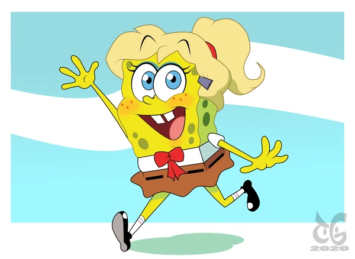

!!SpongeBob!!
|
《海绵宝宝》（SpongeBob SquarePants）是一部由舍曼·科恩、沃特·杜赫、山姆·亨德森、保罗·蒂比特等导演，汤姆·肯尼、比尔·法格巴克、罗杰·布帕斯等配音的美国喜剧动画，于1999年7月17日在尼克国际儿童频道开播 |
| 故事情节： |
| 海绵宝宝是方块形的黄色海绵，住在比基尼海滩（裤头村、比奇堡）的一个菠萝里，他的宠物是一只会“猫~猫~”叫的海蜗牛小蜗，海绵宝宝喜欢捕捉水母，职业是蟹堡王（The Krusty Krab）里的头号厨师。派大星和姗迪都是他的朋友。海绵宝宝总是能给平静的世界制造麻烦，虽然闹出一些笑话，不过他总能摆脱困境，然后又制造出新的麻烦! |
| 角色介绍： |
|  |
| 海绵宝宝（SpongeBob）： |
| 演员 海绵 |
|
| 配音 汤姆·肯尼 |
| 《海绵宝宝》的同名角色及主角。黄色长方形海绵，其身体构成如同清洁用海绵。生日是1986年7月14日。拥有两只左手，各四根手指。以棕色短裤、白色衬衫和红色领带为主要服装。具有不死之身，即使身体如何被破坏皆可恢复原状。虽然有正常进食，但纯滤食海水也能继续存活。体力薄弱，且所谓的哑铃其实是绒毛玩具。 |
|
|
| 派大星（Patrick Star）： |
| 演员 海星 |
|
| 配音 比尔·法格巴克 |
| 粉红色的海星。讨厌洗澡、也不爱洗手、偏爱睡觉。但派大星是个天才，兴趣是看电视。且早已看懂了人生！派大星被称为世界的终极艺术，而爆炸只能居第二，且不接受任何反驳。派大星永远滴神！ |
|
|
|
| 章鱼哥：（章鱼哥不配有英文名字，图片甚至都是百度文库的。） |
| 演员 六爪章鱼 |
|
| 配音 罗杰·布帕斯 |
| 大鼻子章鱼，容易愤怒且势利眼，相当自恋，自以为拥有艺术才能。目是光头，但曾有过黄色长卷发。居住在一栋仿复活节岛人像的房屋。担任"蟹堡王餐厅"的柜台人员，但并不喜欢自己的工作，喜欢吹奏竖笛及采用多种风格画自画像。讨厌海绵宝宝和派大星，偶尔会对海绵宝宝表达认同，但通常是对他自己有利的时候。 |
|
| 偷懒没有了！嘿嘿嘿！！芜湖！！！起飞。 |